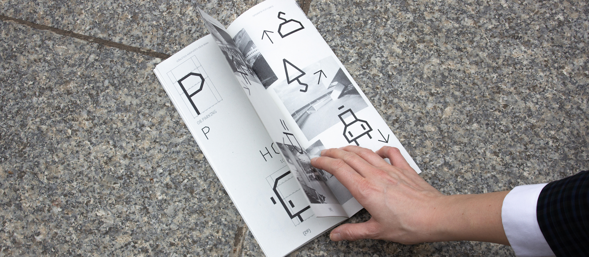
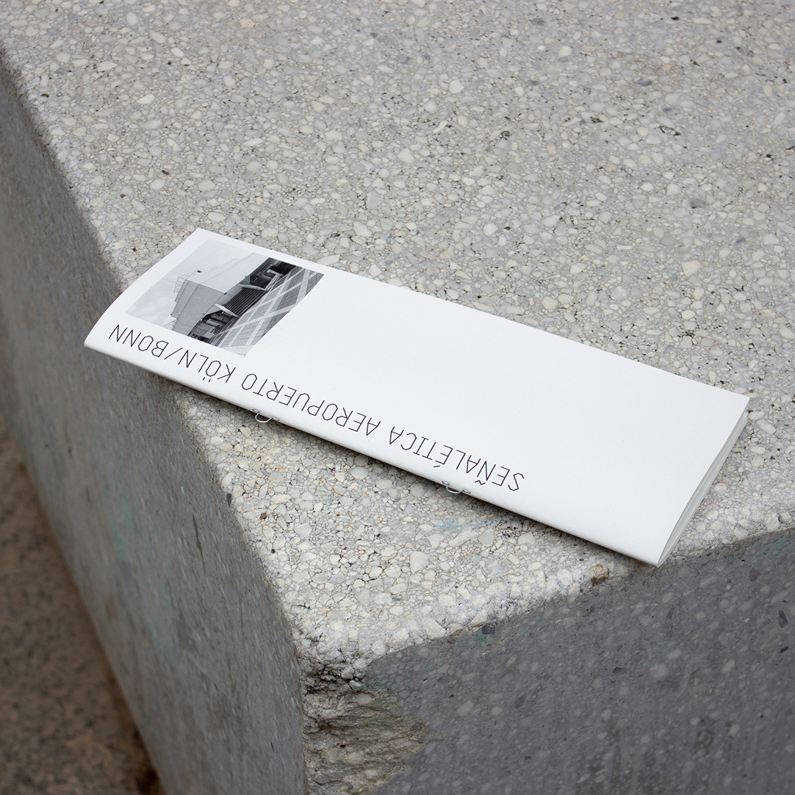
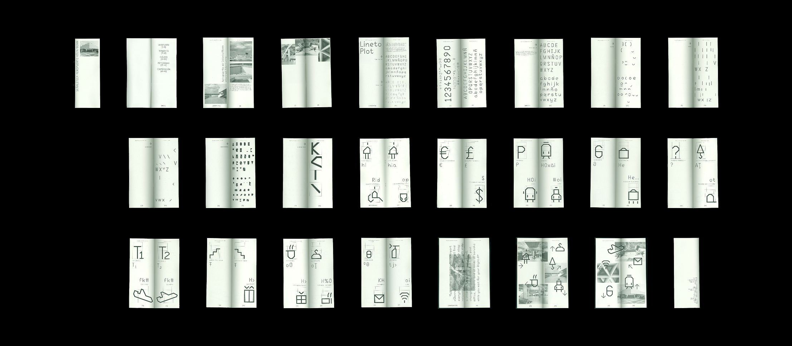
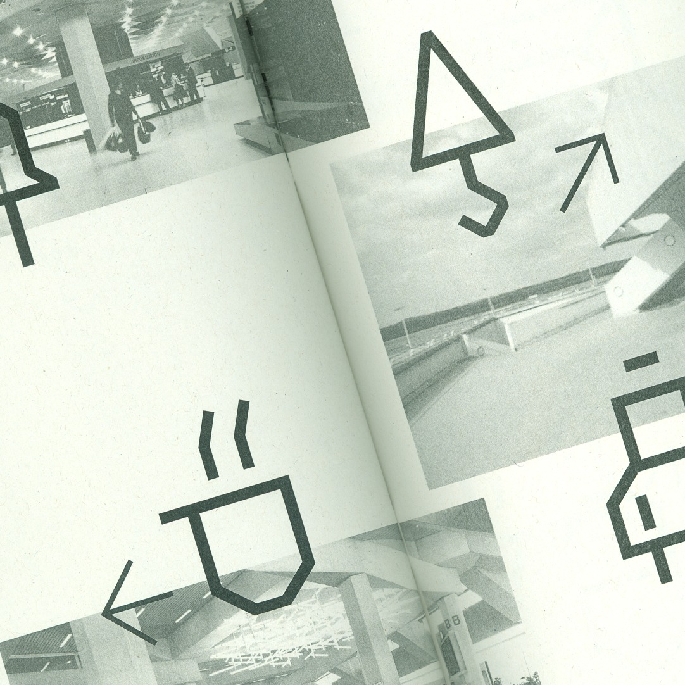

Köln/Bonn Airport
Wayfinding and editorial design project developed for Köln/Bonn Airport in Germany.
The pictograms were inspired by the brutalist architecture of the space and the geometric forms of the sans-serif Plot typeface, which echo the building
both conceptually and visually.
- Editorial Design
- Wayfinding
- Typography




